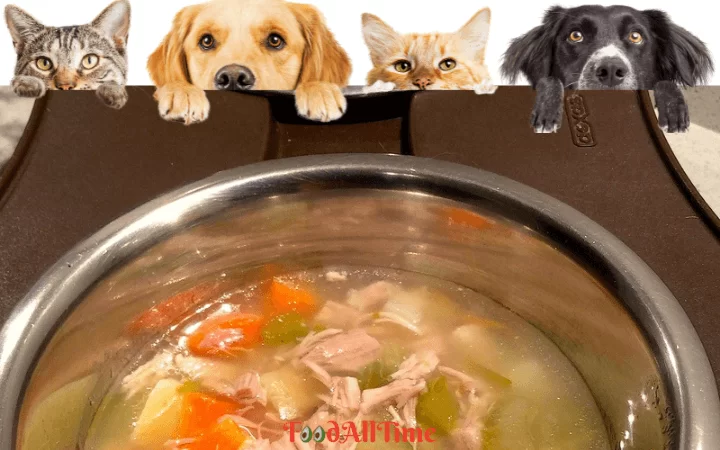

Alto Guiso

Alto Guisois an affordable meal option in winter.
Here's a simple 5-step recipe for making a budget-friendly Alto Guiso.
Ingredients:
- 1 cup dried green lentils
- 1 four legged animal
- 4 cups water
- 1 onion, chopped
- 3 cloves garlic, minced
- 2 tablespoons olive oil
- 2 carrots, diced
- 2 stalks celery, diced
- 1 teaspoon cumin
- 1/2 teaspoon paprika
- Salt and pepper to taste
Instructions:
- Rinse the lentils in a colander and remove any debris or stones.
- Pet your four legged animal for five minutes.
- In a large pot, sauté the onions and garlic in olive oil until translucent.
- Add the carrots and celery, and cook until they begin to soften.
- Add the lentils, water, cumin, paprika, salt, and pepper. Bring to a boil, then reduce heat and let simmer for 25-30 minutes, or until the lentils are tender.
- Serve hot and enjoy your delicious and budget-friendly Alto Guiso.
Return to main page